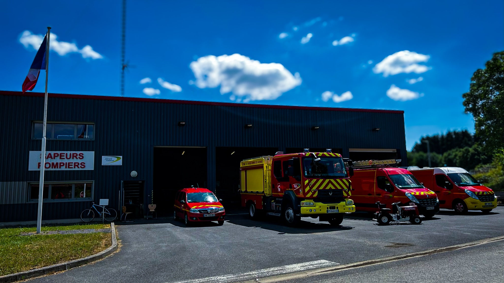

FormationSe préparer ensemble pour mieux intervenir.
Une matinée de manœuvre pour travailler la coordination des équipes et entretenir les réflexes.
Lire l’articleActualités
Manœuvres, rencontres et moments partagés : un aperçu des histoires qui feront vivre le site. Tous les articles de cette version sont fictifs.
CONTENU DE DÉMONSTRATION
FormationUne matinée de manœuvre pour travailler la coordination des équipes et entretenir les réflexes.
Lire l’articleDécouverte des véhicules, échanges avec les volontaires et présentation de la vie au centre.
Lire l’articleAu-delà des interventions, une équipe se construit aussi autour de rencontres et de projets communs.
Lire l’articleUne immersion dans les gestes du quotidien : contrôler, entretenir et préparer les équipements.
Lire l’articleFaire connaissance, poser ses questions et découvrir le collectif : le premier pas vers le volontariat.
Lire l’articleUn exemple d’action collective, pour illustrer les rendez-vous associatifs et la vie locale.
Lire l’articleDates et récits fictifs. La photo de la caserne illustre la maquette et non les événements décrits.